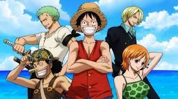
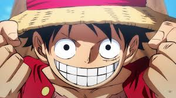

ONE PIECE

Adaptada da série de manga homônima, One Piece é um anime que conta a história do jovem Monkey D. Luffy, que ganhou poderes de borracha depois de comer uma fruta do diabo. O enredo mostra as aventuras de Luffy e seu grupo, Os Piratas de Chapéu de Palha, em busca do One Piece, o tesouro mais procurado do mundo.
EATS BLUE

Episódio do East Blue retrata os Chapéus de Palha se preparando para deixar East Blue e entrar para Grand Line. No caminho, Sanji pega um barril e os outros membros da tripulação relembram suas jornadas até então e reafirmam seus sonhos.
PROTAGONISTA

Luffy é o capitão dos Piratas do Chapéu de Palha. Quando criança, ele comeu uma Gomu Gomu no Mi, uma fruta que lhe deu o poder do homem-borracha em troca de sua habilidade de nadar. Filho de Monkey D. Dragon, o jovem sonha em se tornar o Rei dos Piratas, título que ninguém ocupa desde a execução de Gol D.